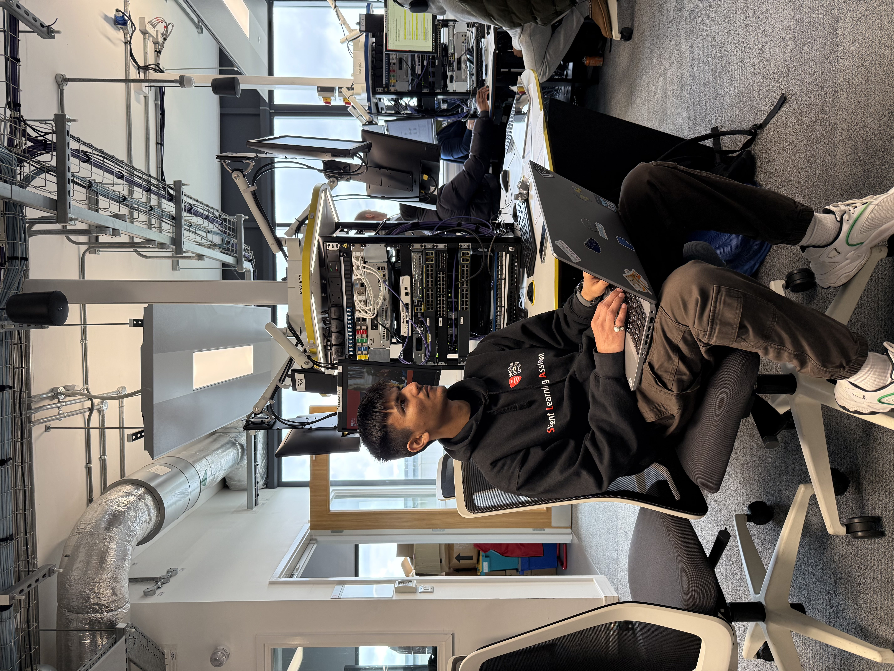

>_ |
Building secure, intelligent infrastructure — from SD-WAN zero trust architectures to IoT monitoring systems and ethical penetration testing. Backed by 2+ years of industry experience and a prior Computer Engineering degree.

Building secure, intelligent infrastructure — from SD‑WAN zero trust architectures to IoT monitoring systems and ethical penetration testing. Backed by 2+ years of industry experience and a prior engineering degree.
I'm a final-year BSc Computer Networks and Security student at Middlesex University, with a prior Computer Engineering degree from Gujarat Technological University and two years of professional experience as a Cloud/Network Support Engineer at Pantech Instruments.
At Middlesex, I've also worked as a Network Lab Maintenance Assistant — managing Cisco switches, ASA firewalls, and routers — and as a Student Learning Assistant, guiding 100+ students through networking and Python labs. Outside the lab, I serve as Student Voice Leader, representing over 100 students in digital resource and security initiatives.
My interests sit at the intersection of network engineering, cloud architecture, and cybersecurity — the three disciplines that define how organisations stay connected and protected in a threat-rich world.
BEng Computer Engineering, Gujarat Tech. University · Cloud/Network Engineer at Pantech Instruments (2 yrs)
C programming, Python networking, client-server architecture, security basics
IoT systems, AWS cloud architecture, project management, MQTT & VPN design
SD-WAN, Zero Trust, ML anomaly detection, ethical hacking, dissertation research
Network Lab Maintenance Assistant
Middlesex University · LondonStudent Learning Assistant (SLA)
Middlesex University · LondonCloud / Network Support Engineer
Pantech Instruments · Vadodara, IndiaNetworking
Cloud & DevOps
Security
Development
Designed and implemented a risk-adaptive Zero Trust Architecture for cloud-based SD-WAN using an Isolation Forest + Autoencoder ML ensemble. Achieved 92.8% attack detection vs 52.97% for static policies — a 39.83 pp gain with 0% false positives. Integrated Cisco vManage, Open Policy Agent, Prometheus/Grafana, and Docker Compose.
Led a 4-member team conducting authorised wireless security testing in a controlled lab environment. Captured multiple WPA handshakes using monitor mode and airodump-ng; performed offline cracking with Aircrack-ng and Hashcat to validate weak passphrase risks. Evaluated and tested 4 defensive mechanisms — 802.11w PMF, WPA3-SAE, WPS disabling, and wireless IDS. Produced a structured risk analysis aligned with CIA triad principles.
Designed an IoT-based hydropower monitoring system integrating 6+ environmental and electrical sensors (DHT22, ultrasonic, flow, TDS, soil-moisture, vibration, voltage) on Arduino. Implemented automated data collection and alert triggering with edge preprocessing to reduce cloud transmission load by filtering raw sensor noise. Streamed live data via MQTT for remote monitoring, with OLED displays, servo valve automation, and interactive Pandas/Matplotlib dashboards.
Led architecture and AWS security design for an IoT solution connecting 5+ edge sensor nodes across multiple sites to cloud infrastructure. Implemented secure MQTT with mutual TLS between Raspberry Pi devices and AWS IoT Core; configured OpenVPN on EC2 for encrypted site-to-cloud tunnels. Built a serverless pipeline via Lambda and DynamoDB, deployed containerised workloads on Docker and Kubernetes (EKS), and integrated CloudWatch and GuardDuty for continuous monitoring and threat detection.
Built a full-stack investment platform over TCP sockets: multi-threaded Python server, Tkinter GUI client, and SQLite database handling users, portfolios, and transactions. Developed a secure authentication and portfolio management system with transaction validation and data integrity checks, reducing processing delays by 20%. Integrated live stock and crypto data via web scraping with embedded Matplotlib charts.
Developed five complete arcade games: Minesweeper (Tkinter), Pong, Space Invaders (Pygame, multi-file OOP), Pac-Man (ghost AI, tile-based movement), and Tetris (persistent CSV scoring and background music). Demonstrated event-driven programming, sprite management, collision detection, and GUI design.
Command-line C program generating secure passphrases by randomly selecting words from
multiple dictionary files using fseek/ftell for optimised random file
positioning. Features input validation, configurable word-count (2–5), and dash-separated
output — demonstrating C file I/O, security-aware design, and performance-conscious implementation.
Developed a GUI-based Linux administration tool using Bash and Zenity, providing a graphical interface for system management tasks. Automated secure file management operations, reducing manual configuration steps. Demonstrated Linux administration, shell scripting, and desktop GUI integration for operational efficiency.
Open to internships, graduate roles, and project collaborations in network engineering, cloud infrastructure, and cybersecurity.